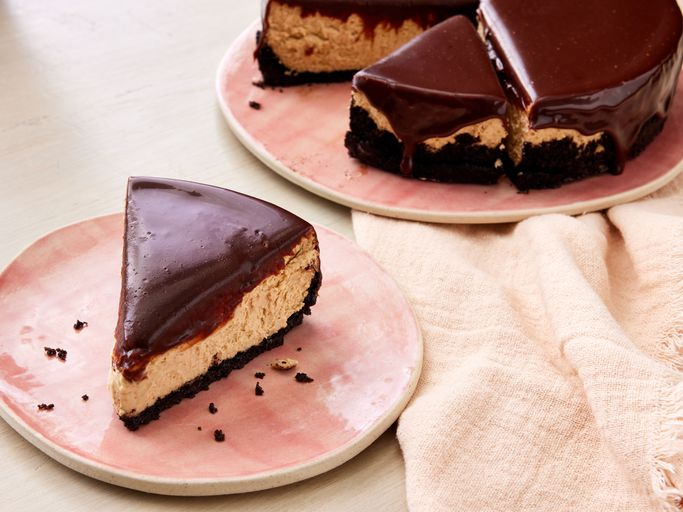

Baileys Cheesecake Recipe

Description
This Baileys cheesecake has a delicious mocha-flavored crust and a
super creamy filling. It's topped with a smooth chocolate ganache for
a decadent dessert no one will be able to resist!
- Prep Time:
45 mins
- Cook Time:
1 hrs 5 mins
- Additional Time:
4 hrs
- Total Time:
5 hrs 50 mins
- Servings:
10
- Yield:
1 (8-inch) cheesecake
Ingredients
Cookie Crust
- Cooking spray
- 20 java chip-flavored creme-filled chocolate sandwhich cookies
(such as Oreo)
- 2 tablespoons butter, melted
Cheesecake Filling
- 3(8 ounce) packages cream cheese, at room temperature
- 3/4 cup sour cream, at room temperature
- 3/4 cup granulated sugar
- 1 tablespoon instant espresso powder
- 1 teaspoon vanilla extract
- 1/4 teaspoon table salt
- 3 large eggs, at room temperature
- 1/2 cup Irish cream liqueur
Baileys Ganache
- 1/4 cup heavy cream
- 1/4 cup Irish cream liqueur
- 1 teaspoon instant espresso powder
- 1 cup milk chocolate chips
- sweetened whipped cream for serving
Steps
- Step 1
Preheat the oven to 350 degrees F (175 degrees C) with rack
in lower third position. Lightly grease an 8-inch springform
pan with cooking spray and line with parchment
on the bottom.
- Step 2
Process cookies in a food processor until ground into small crumbs,
2 to 3 minutes. Pour in melted butter and process for another 30
seconds.
- Step 3
Press evenly into bottom and about 1 inch up sides of prepared
pan
- Step 4
Bake in the preheated oven until firm and fragrant, 10 to 12 minutes.
Let cool slightly while making the filling, about 10 minutes.
- Step 5
Reduce oven temperature to 300 degrees F (150 degrees C).
- Step 6
Once crust is cooled, wrap bottom of pan with 2 layers of heavy-duty aluminum
foil to prevent water from seeping into pan.
- Step 7
To make the cheesecake filling: Add cream cheese to the bowl of a
stand mixer fitted with the paddle attachment and beat on medium-low
speed until creamy, about 2 minutes. Add sour cream, and beat on
medium-low speed until fully combined,
scraping down sides of bowl halfway through, about 2 minutes.
- Step 8
Beat in sugar, espresso powder, vanilla, and salt, until combined,
scraping down the sides of the bowl halfway through, about 1 minute.
Add eggs, 1 at a time, beating on low speed just until combined after
each addition and scraping down sides of bowl with a rubber spatula,
1 to 2 minutes.
- Step 9
Add Baileys and beat on low speed until just combined, about 45 seconds.
- Step 10
Pour filling onto cooled crust. Place springform pan into a larger
roasting pan and place in preheated oven. Pour 1 1/2 cups of water
in roasting pan and bake until the cheesecake is almost set
(the center 2 inches should jiggle slightly)
and edges have pulled away slightly from pan, 50 to 60 minutes.
- Step 11
Turn off oven and leave door cracked open about 7 to 8 inches;
let cheesecake stand in oven 30 minutes. Remove from oven and
carefully lift cheesecake from water bath.
Cover and chill at least 3 hours or overnight.
- Step 12
To make the ganache: Heat cream and Baileys in a small saucepan
over medium heat until warm to the touch, 3 to 4 minutes.
Stir in espresso powder until fully combined.
Add chocolate chips and let stand 1 minute; stir until smooth.
- Step 13
Remove cheesecake from pan and place on a cake plate.
Pour ganache evenly over chilled cheesecake, spreading slightly
over edges with an offset spatula.Refrigerate until ganache is firm, about 30 minutes.